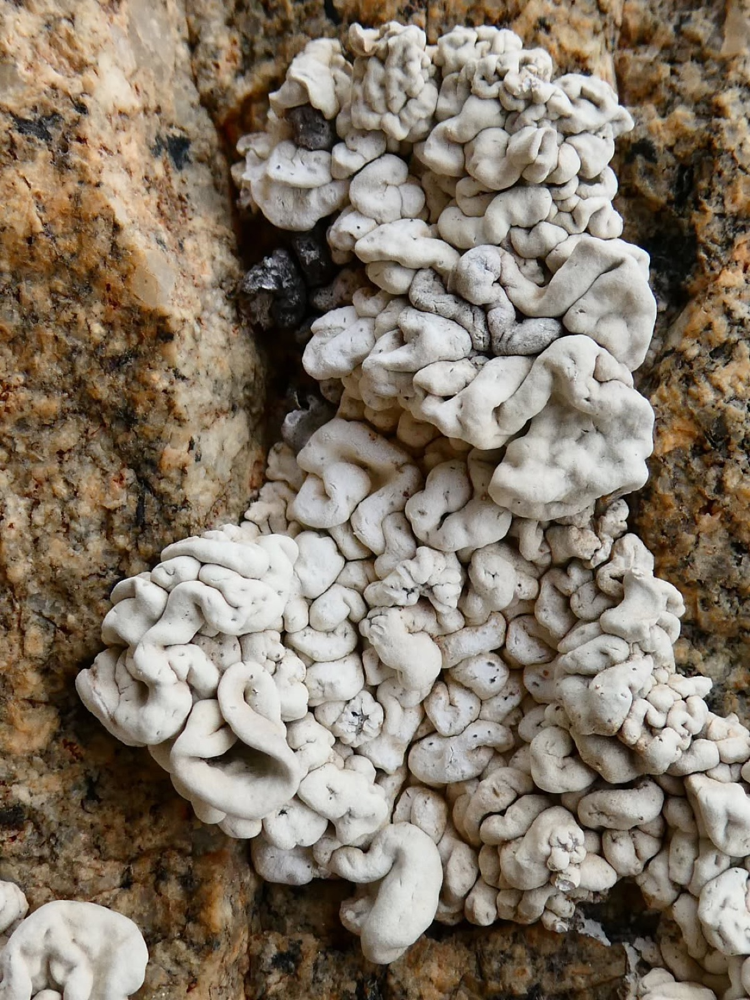
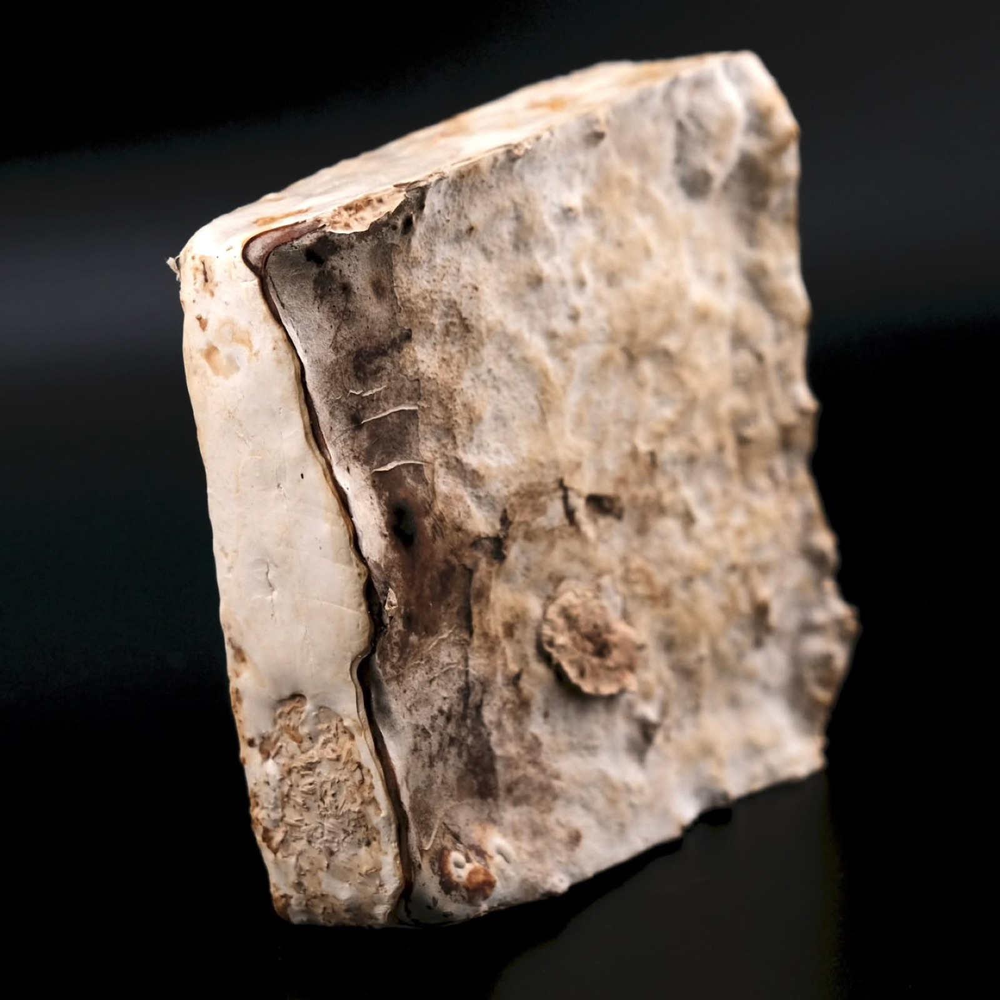
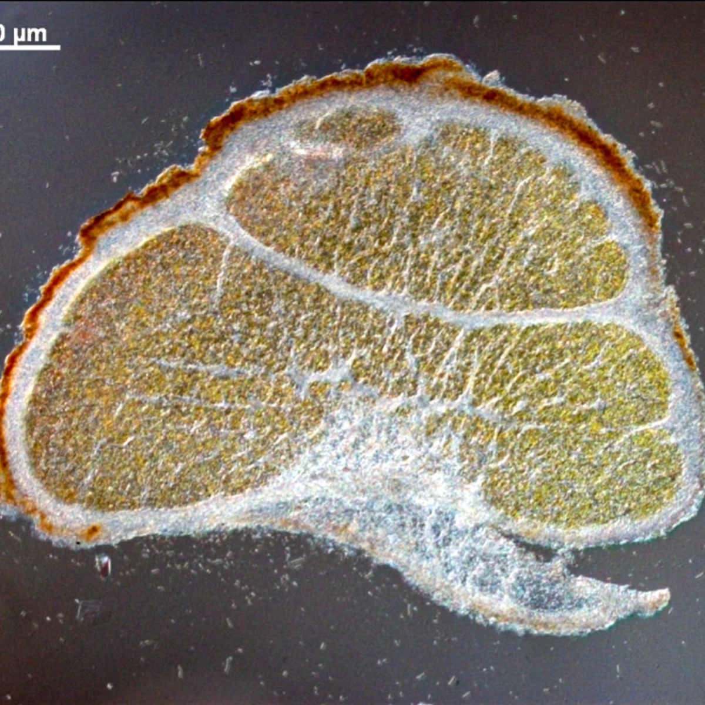

Foto: Dr. Patrick Jung (@selectedplants)Flechten · Polargebiete · Beispielprojekt
Kälte als Zuhause.
Flechten wachsen, wo vieles andere Leben scheitert. Ihr Kraftwerk ist eine winzige Grünalge: Trebouxia, die Alge des Jahres 2026.

Foto: Dr. Patrick Jung (@selectedplants)[Hier läuft das Erlebnis der Gruppe: ein Video mit Untertiteln. Innerhalb dieser Fläche gestaltet jede Gruppe frei.]
Video · 8 Min.
Schau den Flechten zu.
[Ein Satz der Gruppe, worum es im Video geht.]
- Mit Ton
- Untertitel DE und EN
- Auch mobil
Lädt erst nach dem Klick, ca. [80] MB. Keine externen Dienste.
Die Frage
Wie hält man Kälte, Dürre und UV-Licht aus?
Flechten wachsen dort, wo vieles andere Leben scheitert: auf nacktem Fels, in der arktischen Tundra und in Wüsten. Möglich macht das eine Lebensgemeinschaft. Ein Pilz bildet das schützende Gerüst, eine Alge im Inneren betreibt Photosynthese. Sehr oft ist diese Alge Trebouxia. Sie übersteht lange Trockenheit, starke UV-Strahlung und große Temperaturschwankungen.
Nach Dr. Patrick Jung, selectedplants.de (externe Seite)

Vertiefen
Methode
[Wie die Daten entstanden sind: Probenahme, Messung, Mikroskopie, Filmaufnahmen.]
Gestaltung
[Wie die Gruppe aus der Forschung ein Video gemacht hat: Ideen, Drehorte, Entscheidungen.]
Quellen
- Patrick Jung: “German Alga of the Year 2026: Trebouxia – a hidden powerhouse in lichens and a specialist for extreme habitats”. Blog, selectedplants.de.Lesen: Blogbeitrag zu Trebouxia (externe Seite)
- Sektion Phykologie der Deutschen Botanischen Gesellschaft: Alge des Jahres 2026, Trebouxia.Lesen: Alge des Jahres 2026 bei der Deutschen Botanischen Gesellschaft (externe Seite)
Team [Namen der Gruppe] · Betreuung [Lehrende] · Forschung und Inhalte Dr. Patrick Jung, XCEL Lab